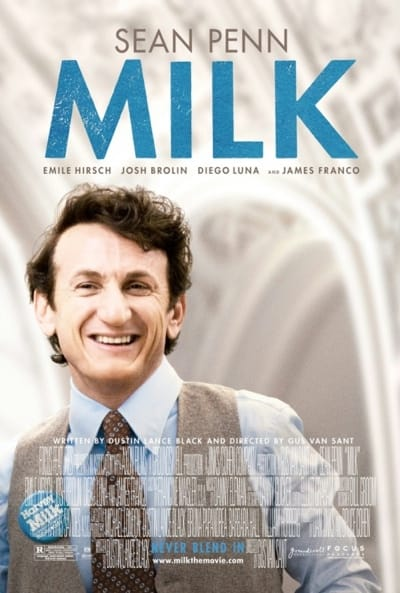

Клевая реклама масла или какого-то его заменителя что-ли :)
We're cool

Milk (2008)

Очень клевое кино. Наверное лучшая роль у Шона Пенна. А посоветуйте с ним чего-нить еще посмотреть? :)
Brammy/Kyprianou Residence

Очень клевая тема. Вот этот вот вид сзади вообще отпад. Интерьерчик тоже вполне себе.
Work alone
I don’t believe anything really revolutionary has ever been invented by committee... I’m going to give you some advice that might be hard to take. That advice is: Work alone... — Steve Wozniack.
Кстати, об этом же написано в "59 секундах". Все эти брейнстормы и тп, все фигня, и одиночки эффективнее решают поставленные задачи. Собираться имеет смысл только для того, чтобы получить представление о картине в целом, понять требования, услышать чего хотят или о чем думают люди вокруг. Все остальное происходит где-то вне этого, в другое время и в другом месте.
17/11

Выбрал 17 треков из того, что слушал в 11 году. Так и назвал. Весит 200 мегов. Скачать одним архивом можно здесь. Вот.
Greatest fun
I heard a funny thing Somebody said to me “You know that I could be in love with almost everyone; I think that people are the greatest fun.” And I will be alone again tonight my dear
Gotye - Somebody That I Used To Know
Клип мне не понравился, а вот сам трек отличный.
Иоганн Себастьян Бах - Хорошо темперированный клавир (С. Рихтер)

Лампа
Прикольная лампа.